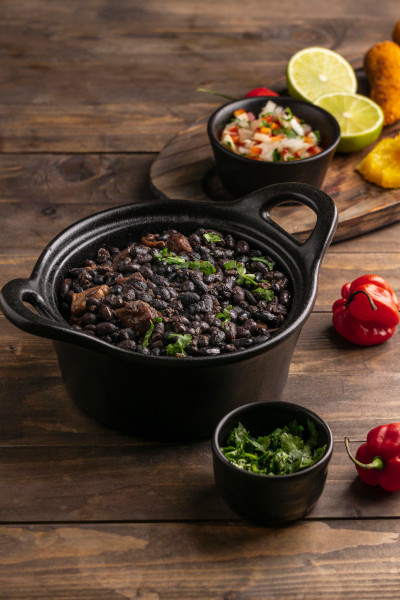
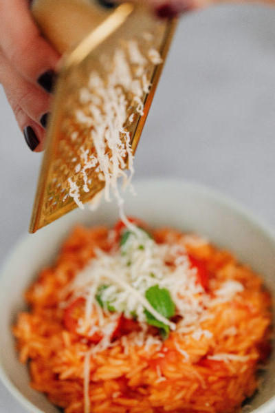
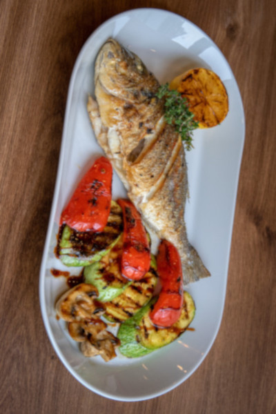
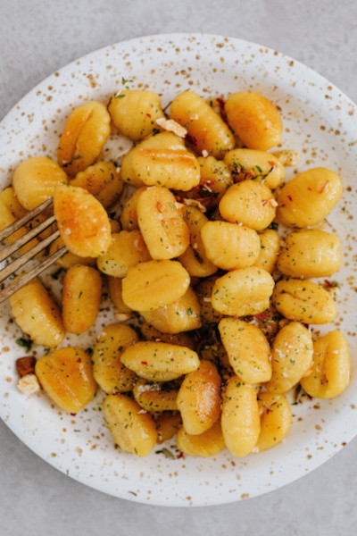

Feijoada da tia Maria
Descrição:
Feijão preto com linguiça calabresa, pernil suíno, arroz e farofa.Ingredientes:
Feijão preto, pernil e linguiça de porco, alho, sal , óleo, arroz e farofa.
Preço: R$ 35,00

Risoto da vó Nena
Descrição:
Arroz arbóreo frito com manteiga e legumes, salpicado com queijo.Ingredientes:
Tomate, caldo de legumes, arroz arbóreo, queijo parmesão, vinho branco, manteiga, cebola, manjericão e sal.
Preço: R$ 20,00

Peixe do vô Alfredo
Descrição:
Filé de peixe grelhado acompanhado de batata e verduras da estação.Ingredientes:
Peixe, limão, sal, pimentão, abobrinha, condimentos e especiarias.
Preço: R$ 45,00

Nhoque du Frufru
Descrição:
Especialidade da casa. Delicioso noque de batata com molho de tomate italiano ao sugo e tempero especial da família.Ingredientes:
Água, batata, farinha de trigo, sal, margarina, especiarias.